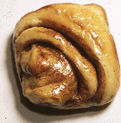

| This might look like an ordinary cinnamon bun... |
|  |
| But it's really the miraculous Nun Bun: |
For more about this silliness*, read below.
*This is not intended to
offend anyone. The fact that two such opposites ---Mother Teresa, who
aided thousands of starving people, and a cinnamon bun, consumed
blithely by the well-fed--- can be seen in the same image, only goes
to show how ambiguous perception is. The very fact that the two
perceptual interpretations are such contradictions is what underlies
the humor; in this way the humor recognizes and acknowledges the
charity of Mother Teresa, and perhaps even tweeks the conscience of
the person who gets the joke. The comparison also pokes fun at those
who too easily proclaim miracles, but again only by juxtaposing the
harmlessly ridiculous against the sublime. The pedagogical purpose
remains the same: To demonstrate that perception is a constructive
interpretation from ambiguous stimuli.
'Nun bun' will live on in Nashville, owner says
Copyright 1997 Nando.net; Copyright 1997 Reuters
NASHVILLE, Tenn. - The owner of a cinnamon bun that drew worldwide notice because of its resemblance to Mother Teresa's face said Friday he has no plans to remove the bun from display now that she has died.
But Bob Bernstein, owner of the Bongo Java coffee shop in Nashville, said his store and an Internet site on the bun dropped commercial tie-ins to the nun months ago after Mother Teresa complained.
"We haven't had time to react to this news, which of course is a very sad event," he said.
Bernstein still refers to the pastry as the "the miracle nun bun." But he said coffee mugs and other items bearing Mother Teresa's image were taken off the market after she sent him a letter saying she had always opposed use of her image for commercial purposes.
"It's a cinnamon bun. Some people think it looks like Jimmy Durante. Some people think it looks like Mother Teresa," he said, adding that there are no plans to stop displaying the pastry.
The roll is in California at the moment, he said, undergoing a photo shoot.
He said Mother Teresa's lawyer told him that the nun was amused by the roll.
"Her passing is a sad event but we're happy she actually laughed when they told her about the bun," he said. "I understand she had a good sense of humor."